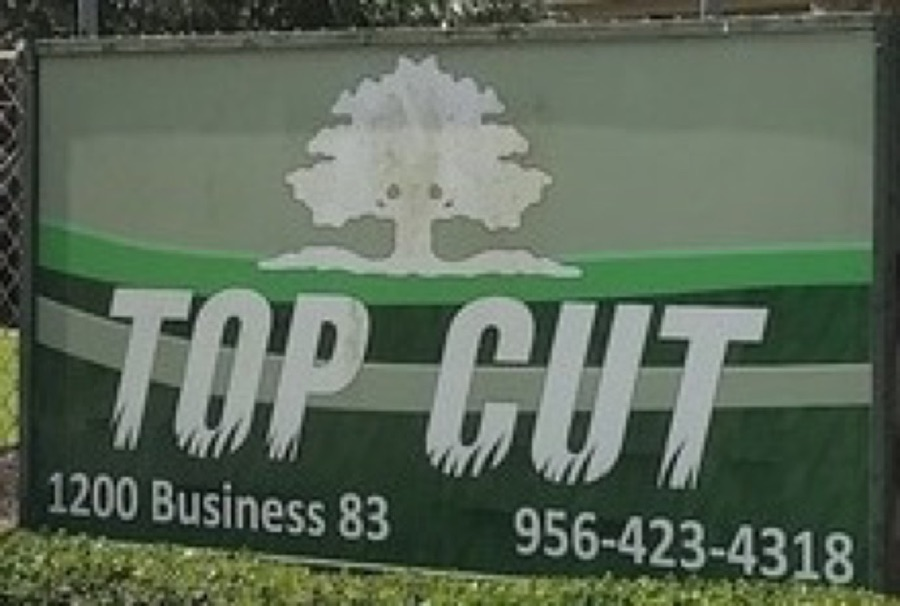

Your logo, sharpened
Top Cut's logo lives on the sign out front, the truck wraps and the vans: a white oak over heavy italic TOP CUT letters whose bottoms are cut into grass blades. We only found it as small photos, so for the demo we redrew it clean, keeping every part of it.
Current logo (from your sign)

Photographed from the sign at 1200 Business 83. No high-resolution or vector file is online.
Used on the demo site Your logo, redrawn
64
32
16
- Idea
- The sign out front, drawn crisp enough for phones, trucks and print.
- Kept
- The white oak, the heavy italic TOP CUT, the grass-blade cut on every letter, the sign green.
- Changed
- LAWN CARE is bigger and bolder so it reads on a phone; a horizontal version for headers; an oak favicon.
- Note
- The lettering is a close redraw, not your original file. If you have the vector file from your sign or wrap shop, we'd use that.